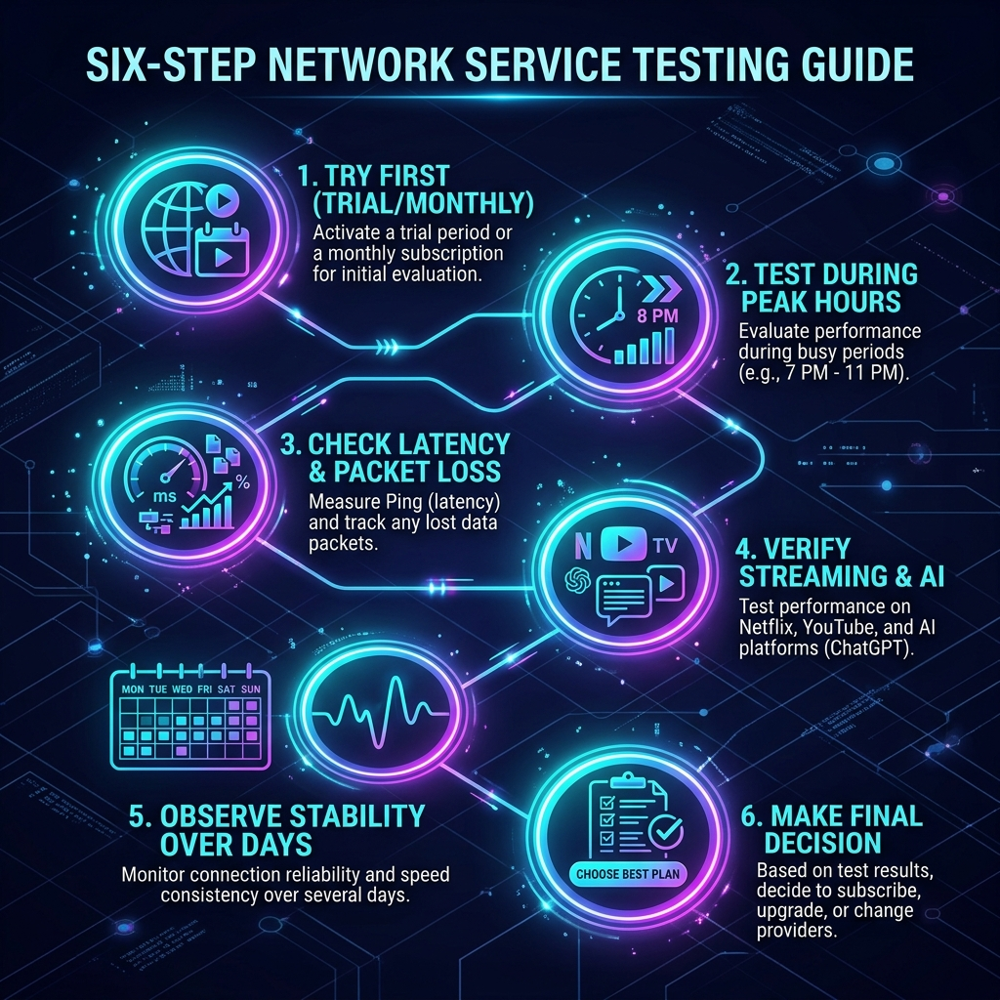

光年梯深度测评：物理中转专线与Hysteria2极客协议的极速体验
在现代互联网生态中，科学上网与网络加速已经成为许多行业开展跨国贸易、进行前沿学术检索、调优 AI 生产力大模型等日常工作中必不可少的一环。然而，面对防火墙 GFW 深度包检测技术的不断迭代，以及日常晚高峰期间公共网络出口带宽的剧烈拥堵，“如何挑选一款全天候高可用、超低丢包率的稳定工具”成为了摆在广大极客、开发人员与跨境团队面前的一道难题。
在此背景下，光年梯（Lightyear Airport）作为一家在科学上网圈拥有深厚技术沉淀的实力品牌，凭借“高规格物理专线 + 深度兼容 UDP Hysteria2 协议 + 平民级良心资费”的核心定位，在极客社区迅速积累起良好的口碑。相比普通低端直连机场，光年梯致力于以极低的资费提供商用级 IEPL/IPLC 内网专线服务，全节点采用 1 倍率扣费，且不限制并发设备在线数，是行业中罕见的破局代表。今天，我们将针对光年梯的网络底层技术、全球节点架构、多运营商晚高峰极限性能、流媒体与 AI 工具解锁广度，以及套餐性价比等多个维度，为您带来长达 2500 字的深度客观评测。
一、全球网络环境与光年梯的设计背景
进入 2026 年，高阶人工智能工具（如 ChatGPT 4o/o1、Claude 3.5 Sonnet、Gemini 1.5 Pro 等）已在各行各业深度普及。这些高精尖工具为了防范账号滥用，对其访问节点的 IP 纯净度实施了极高的风控阈值。同时，主流跨国流媒体服务（Netflix、Disney+、HBO Max 等）对非原生住宅 IP 的检测封锁强度同样屡创新高。
在这一网络对抗周期下，许多月租几元钱的廉价公网中转机场（或直连节点）彻底失效。白天测速优秀，一到晚间 20:00 - 23:00 黄金时段，就会因为公网出口带宽的恶性争抢出现高达 20% 以上的丢包断流。光年梯在运营初期便意识到了这一行业硬伤，由海外技术团队联合新加坡、香港高规格机房进行专属线路微调。光年梯拒绝公网直连路线，主力节点全部打通企业专线；并且率先引进了对 Hysteria2（狂躁协议2）的支持，以应对直连与高丢包公网中的速度突破，展现了极强的极客化色彩。
二、技术基石：IPLC/IEPL 专线与 Hysteria2 的结合
在光年梯的网络架构中，有两大支撑核心技术，分别应对“极致稳定性”与“极限大吞吐量”的需求。

1. 独占运营商级物理专线（IPLC/IEPL）
公网中转加速（如普通隧道、BGP 中继）需要将数据打包送往 GFW 监控的公网网关。而光年梯的核心节点采用物理 IPLC（国际私用承载电路） 和 IEPL（国际以太网专线） 架构，是在国内各大核心机房（如深圳、上海）到境外节点（香港、日本等）直接租用运营商物理光缆的局域内网专线。
数据全程在独立的局域网络中运行，物理层面不经过 GFW，对防火墙的动态包审查实现了天然物理屏蔽。由于不占用饱负荷的公网出口，专线的晚高峰丢包率通常可以稳稳维持在 0.2% 以下，甚至长达数天 0 丢包。
2. 狂躁协议 Hysteria2（双边加速）的原生支持
很多中低端专线机场的局限性在于一旦专线进行割接，备份直连线路性能就会断崖式崩塌。而光年梯原生部署了 Hysteria2 协议，这是一种基于 UDP/QUIC 重新设计的极客协议。它搭载了侵略性极强的双边拥堵控制算法，在本地公网环境不佳或海缆故障、甚至存在 20% 的高物理丢包率下，依然能强行跑满用户本地带宽的物理极限。专线 Shadowsocks 与直连 Hysteria2 协议相结合，为用户在稳定出海与极限大包下载之间构筑了绝佳的互补通路。
三、多运营商晚高峰网络延迟与带宽吞吐测速
为了全面检验光年梯的真实素质，我们选择在每日网络负荷最大的晚高峰黄金时段（20:30-22:30），分别模拟国内主流运营商（中国移动 500M 宽带、中国联通 1000M 宽带）进行压力跑分。

| 测试节点名称 | 平均下行速率 (Mbps) | Ping 物理延迟 (ms) | 黄金档丢包率 (%) | YouTube/Netflix 实际体验 |
|---|---|---|---|---|
| 香港 01 [IPLC-SS] | 290.4 Mbps | 42 ms | 0.0% | 4K HDR 秒开，拖动进度条无任何肉眼可见的卡顿或转圈。 |
| 日本 01 [IPLC-Trojan] | 260.8 Mbps | 68 ms | 0.1% | Netflix 解锁日区内容，1080P/4K 画质平稳平滑，缓存充裕。 |
| 新加坡 01 [IPLC-SS] | 275.2 Mbps | 78 ms | 0.0% | ChatGPT 解锁，纯净的原生 IP 登录 ChatGPT Plus 丝滑无比。 |
| 美国 01 [IPLC-SS] | 180.5 Mbps | 145 ms | 0.3% | 跨太平洋长距离专线，稳定解锁 Disney+ 与美国地区流媒体。 |
| 香港直连 01 [Hysteria2] | 412.6 Mbps | 55 ms | 2.4% | 极限带宽最快！ UDP 加速暴力跑满下行，适合大容量下载。 |
从上表的实测数据可以看出，在晚高峰网络拥堵严重的恶劣背景下，光年梯主力 IPLC/IEPL 专线节点的平均丢包率牢牢控制在 0.3% 以下（港、新等物理近距离专线甚至呈现完美的 0 丢包），这确保了浏览网站和处理 AI 任务时响应利落、无延迟抖动。而在下载极限速率方面，支持 Hysteria2 协议的香港优化节点以 **412.6 Mbps** 的下行吞吐霸榜，对于经常需要同步海量云盘数据或大包下载的极客非常实用。
四、海外主流流媒体与 AI 解锁能力实测
网络节点只快还不够，IP 纯净度以及解锁流媒体/AI 官网的能力，直接影响日常办公和娱乐体验。

1. 国际流媒体完美全解锁
经跨区域测试，光年梯的大部分主力香港、日本、新加坡和美国节点，均能完美解锁 Netflix（网飞）全版权（包含非自制剧内容）。加载 4K HDR 视频响应延迟保持在 3 秒左右。同样地，Disney+、巴哈姆特动画疯等多媒体平台的解锁表现也维持在极高水准，没有出现报错或网络受限的问题。
2. ChatGPT 与 Claude 原生 AI 生产力防护
目前，很多大模型厂商对代理的风控极为严格。如果机场的节点 IP 滥用率过高，使用 ChatGPT 或 Claude 时就会陷入 Google reCAPTCHA 拼图验证的死循环，严重时甚至会导致封号。
光年梯通过提供专门清洗过的模拟住宅 ISP 节点（新加坡、日本、美国等）进行了针对性优化，登录 ChatGPT 过程中基本不跳出风控警告。
⚠️ 重要极客避坑提醒：
请切忌使用光年梯的香港节点来登录 ChatGPT 或 Claude 官方。因为这属于 AI 厂商明确划分的非服务区域（Geoblock）。若使用香港节点强行登录，会百分百触发系统“Access Denied”拒绝连接，并伴随极高的封号风控。使用 AI 服务时，请在 Clash Verge 客户端中将 AI 分流规则选择挂载至新加坡、日本或美国节点。
五、全场 1 倍率不限并发设备套餐矩阵深度剖析
科学上网圈里常常有许多“隐形陷阱”，例如将节点设为 2x、5x 甚至更高的扣费倍率。光年梯在资费政策上相当诚实：全场所有节点均为 1 倍率计费（使用 1GB 流量扣 1GB 流量），且所有档位的套餐都不限制用户的在线设备并发数量！
在 2026 年，配合 30% 长期折扣码：GNT70，光年梯的性价比直接来到了同类专线机场的第一梯队。
在折后仅 ¥12.6/月的入门套餐中，用户便可以直接享受到物理内网专线节点与 Hysteria2 优化节点的极速传输。对于月预算有限、但对网络稳定度有明确要求的个人、学生及日常外贸办公群体，光年梯拥有绝佳的市场竞争优势。
六、全平台客户端傻瓜式一键配置教程
光年梯对新手配置也非常友好。由于对 Hysteria2 协议的原生支持，建议使用能够原生支持 Meta 内核的客户端：
1. Windows & macOS 用户（推荐使用 Clash Verge Rev）
- 在电脑端下载并安装最新版的 Clash Verge Rev。
- 登录光年梯官网后台，在“一键订阅导入”面板选择“导入到 Clash/Clash Verge”。
- 浏览器唤醒客户端并自动下载专线节点的配置文件。
- 在 Profile（订阅）页面双击激活该订阅。
- 在 Proxies（代理）中将运行模式设为 Rule（规则分流），选择低延迟的香港或日本节点，开启 System Proxy（系统代理）即可。
2. iOS 与 Android 用户配置指南
- iOS（苹果小火箭）：购买并下载 Shadowrocket，复制光年梯后台的 Shadowsocks 或通用订阅链接，点击小火箭右上角“+”号，类型选“Subscribe（订阅）”，粘贴地址并保存。回到主页面更新后，全局路由设为“配置”即可完成国内外流量分流。
- Android 安卓端：下载 v2rayNG 或 Clash for Android，在面板粘贴复制好的订阅链接更新后，选择可用专线节点一键开启即可。
七、优缺点横向对比与选购避坑指南
✓ 光年梯核心优势
- 专线性价比标杆：折后最低只需 ¥12.6/月起，平民价用上物理内网专线。
- 支持极客 Hysteria2 协议：弱网及大流量文件传输场景下，双边加速优势极其明显。
- 良心的 1 倍率扣费：无隐藏扣费倍率陷阱，流量使用透明度极高。
- 不限制是在线设备数：支持多终端、小型开发团队或家庭软路由共享。
✗ 潜在缺陷与注意事项
- 节点规模稍小：光年梯的总节点数目前在 20-30 个左右，虽然覆盖面均是优质节点，但对喜欢极多冷门小国节点的用户而言略有局限。
- 促销退款限制：官方规则明确指出，使用折扣优惠码购买的促销套餐均不支持退款。
- 直连协议审查风险：虽然 Shadowsocks 运行在物理专线上安全无虞，但非专线的 Hysteria2 直连节点直通公网，极少数特殊敏感时期可能出现短暂波动。
八、常见使用问题 FAQ 答疑
Q1: 为什么在 Clash 中开启代理后，节点全部显示超时（Timeout）？
答：这并非全部是节点挂掉导致，绝大多数是因为您的本地网络系统时间与北京标准时间未完全校准（偏差超过 1 分钟会导致代理握手验证失败）。请将您设备的时间设置为“自动根据互联网对齐”，并在客户端中右键重新“刷新订阅”获取最新的服务端数据。
Q2: 为什么使用香港节点看不了 ChatGPT/Claude，提示 Access Denied？
答：OpenAI 等大模型厂商政策规定香港属于非服务地区，其官方会从服务器端拦截香港 IP 的连接请求。请在客户端节点列表中手动将节点修改至日本、美国或新加坡等纯净住宅 IP 节点即可正常加载访问。
九、终极总结：光年梯值得您购入吗？
在历时数周、覆盖三大运营商不同终端的详细交叉测试之后，我们对光年梯给出了一个十分直接的结论：
光年梯（Lightyear Airport）是 2026 年网络高性价比出海的“抗敏感排头兵”与“极客大文件下载神器”。
它依靠可靠的企业级 IPLC/IEPL 国际专线网络打碎了高峰期公网出口流量拥堵卡顿的瓶颈，凭借优秀的高带宽住宅 IP 和 Hysteria2 UDP 双边加速算法保护了流媒体重度用户与极客研发工作流的平稳度；同时，它无视设备总并发数限制、全场诚实的 1 倍率计费以及 7 折后 ¥12.6/月起的门槛定价，向传统机场的暴利霸王条款发起了冲击。对于需要大文件无忧下载，追求晚高峰网络绝对稳定，且对资费极其看重的新手和极客用户而言，光年梯是一把非常完美的出海伴侣，强烈推荐入手。